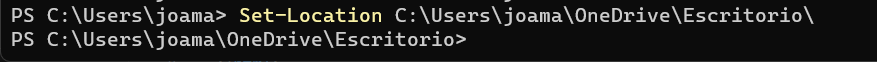
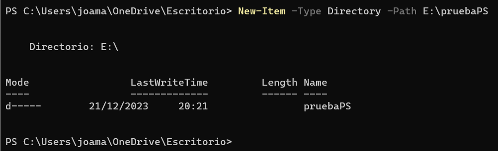
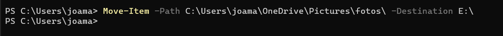
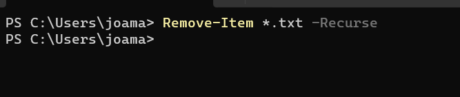
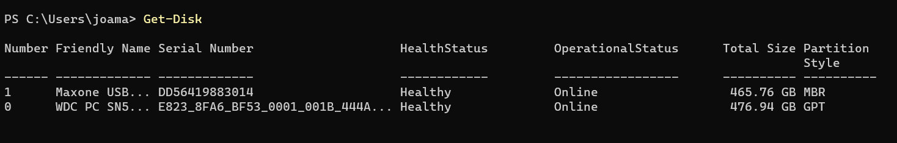
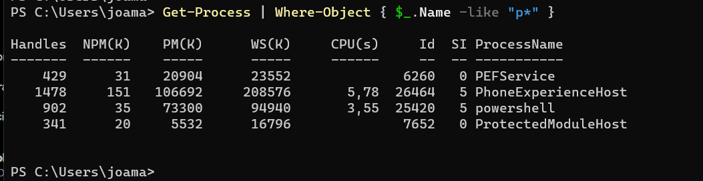
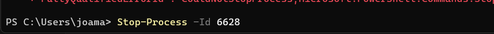
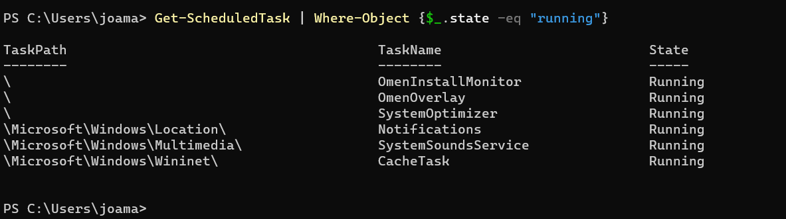

Get-ChildItem
Muestra el contenido de un directorio o archivo.

Set-Location
Cambia de directorios en nuestro árbol, usando rutas relativas o absolutas.
New-Item
Sirve para crear directorios o ficheros en nuestro árbol,especificando la ruta.
Move-Item
Se utiliza para cambiar la ubicación de un archivo o directorio desde una ubicación a otra en el sistema de archivos de Windows.Muy útil para poder mover gran cantidad de archivos y evitar usar interfáz gráfica
Remove-Item
Se utiliza para eliminar archivos o directorios del sistema de archivos de Windows. Puedes usar este comando para eliminar archivos individuales, directorios vacíos o directorios y su contenido de manera recursiva.
Get-Disk
Muestra todos los discos duros o externos que tengamos en nuestro sistema.Proporciona detalles sobre los discos físicos presentes en el equipo, como su número, tamaño, estado, tipo de interfaz, y otros atributos relacionados.
Stop-Process
Permite mostrar una lista de procesos en curso en la computadora, lo que incluye detalles como el nombre del proceso, el identificador del proceso (PID), la cantidad de recursos que está utilizando, la hora de inicio del proceso.En este ejemplo listamos los procesos cuyo nombre empieza por P.
Stop-Process
Detiene los procesos que estan en ejecución en nuestro ordenador, para dtenerlo se utiliza el PID.
Get-ScheduledTask
Las tareas programadas son procesos automatizados que se ejecutan en momentos específicos o bajo condiciones predefinidas en un sistema operativo Windows.En este ejemplo muestro las tareas programadas que están en funcionamiento
